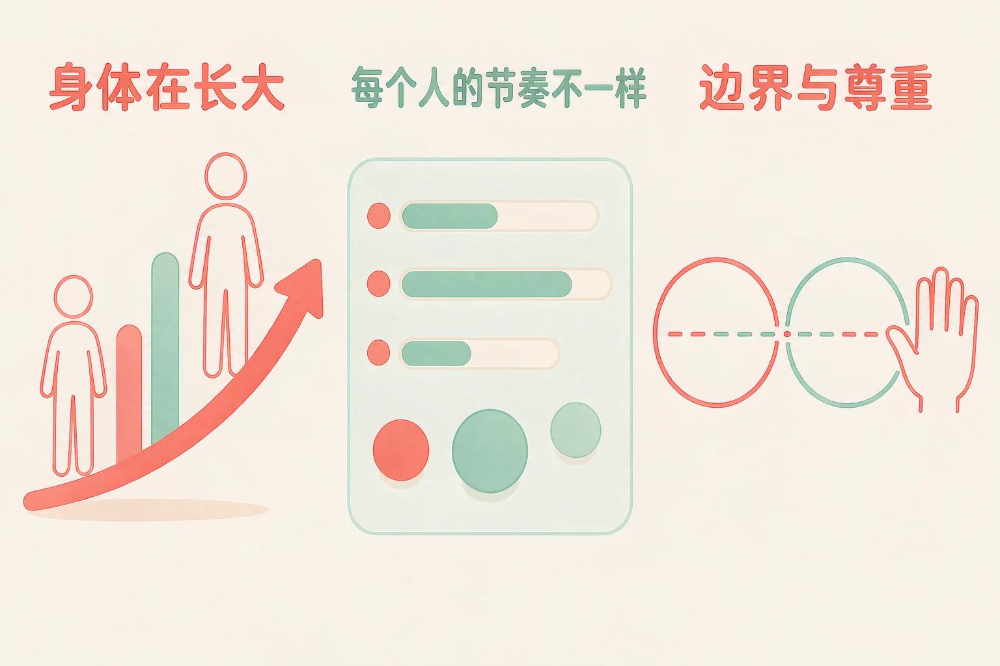
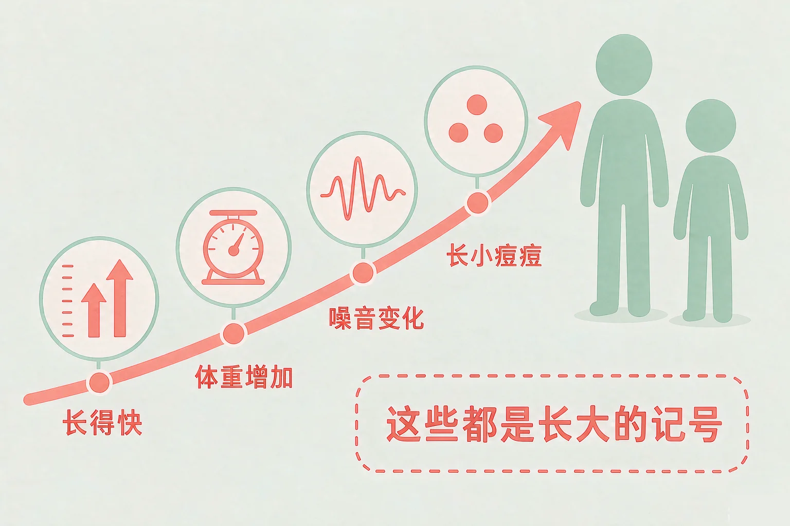
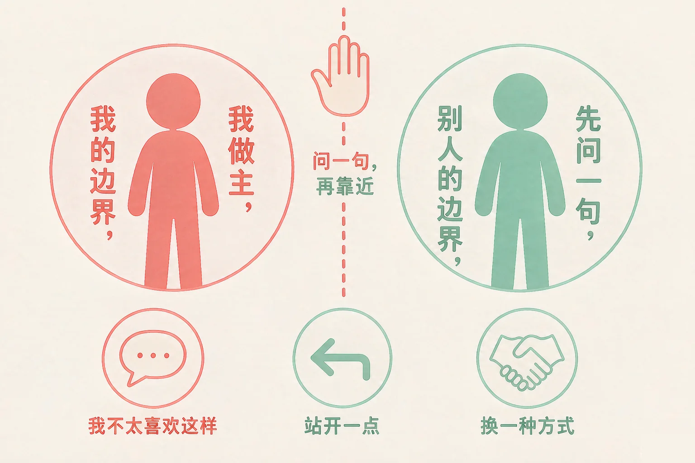

Gallery
v1.0.0 · skill v7.22.0
小学六年级 · 青春期与成长
这一年身体开始变了，同学之间也开始不一样了——哪些变化是正常的？和同伴相处，怎样的距离刚刚好？

选一个你真正想知道的问题，后面的活动都会围着它转。
选择或输入后，这节课会围绕你的问题展开。
先凭直觉选一个，选完立刻看到解释——错了也没关系，正好知道要重点听哪里。
1. 这一年里，你的同桌长得比你快，你还没有什么变化。下面哪种想法更合适？
长个子有快有慢，开始的时间前后差一两年是很常见的事。错因提醒：常见错误是拿同学的时间表当尺子，把自己和别人比出一个结论——比出来的只是节奏不同，不是谁好谁不好。
2. 有同学当众拿你的身体变化开玩笑，你心里不太舒服。下面哪个做法更合适？
把自己的感觉说出来，是在守边界，不是在闹脾气。错因提醒：最容易搞混的是「忍一下」和「守住边界」——忍着不说，玩笑往往不会自己停下来。
3. 下面哪一句是在尊重别人的边界？
别人的身体和东西由别人决定，问一句是最省事的办法。错因提醒：有人误认为「关系好就不用问」——边界和关系好坏是两件事，越亲近越要问一句。
为什么要学这一课？
我们已经知道了怎么给自己的情绪起名字，也练过遇到挫折先分清能改变的和不能改变的（And）；可是最近身体开始变了，同学之间也开始不一样了，心里会冒出一些没人可问的问题（But）；所以这节课先把身体上的变化讲清楚——哪些是正常的、为什么每个人节奏不同（Therefore）。
到了这个年纪，身体会开始出现一些看得见的变化。它们不是毛病，是身体在长大的记号。
① 常见的变化有哪些
身高长得比前几年快、体重跟着增加、嗓音变得不一样、脸上冒出几颗小痘痘、出汗后气味重一点。
② 它们从哪里来
身体里面有几种物质开始慢慢工作，把长大的开关一个接一个打开。它自己会发生，不需要你做什么。

可以照着问自己的两句话：
第一句：这是不是很多人都遇到过的变化？ 第二句：我有没有把它变成一句关于自己的结论？如果有，就把结论放下来，只留下那件能看见的变化。
有的同学误认为「只有我自己是这样，别人都很正常」。这里最容易搞混的是「我不知道」和「只有我这样」——不知道是因为大家都不好意思说，不是因为只有你一个人。把它说给信任的大人听，你会发现自己并不特别。
🔍 深层理解 换个角度再看一遍这件事，看看能不能说出背后的原理。
看见它：把这一年照的几张照片放在一起看，你会看到一条慢慢向上的线。变化一直在发生，只是每天看不太出来。
拆开它：身体的变化分两种：一种几乎所有人在这个年纪都会遇到，比如长个子；另一种只和时间有关，比如谁先谁后。两种都不是评价，只是过程。
迁移它：这种「先知道什么是正常的，再决定要不要担心」的办法，之后在许多事情上都能用：第一次住校、第一次上台、第一次和同学闹别扭。
六张卡片都来自同学们身上真实发生过的事。先在左边点一张，再点上面两栏中的一个。分得不太合适也不会说你错，我会告诉你为什么，还可以换一栏再试一次。
先在左边点一张卡片。
写一条你自己的：
写下这一年里你注意到的一条变化，再写一句：它属于常见的变化，还是属于节奏不同？
第二件事，是这一课最重要的：身体是属于你自己的。哪些地方可以被碰到、和别人靠多近，由你自己决定。
我的边界
我觉得不舒服，就可以说出来。不愿意的时候说不愿意，不需要先找一个理由。
别人的边界
别人也有同样的权利。想靠近、想借用、想牵手之前，先问一句；对方说不要，就停下来。
同伴交往的分寸
和异性同学相处也可以很自然：在大家都看得见的地方，大方地把事情说出来，尊重对方的答复。

说不愿意，可以这样说：
「我不太喜欢这样」 「我们站开一点说话吧」 「这件事我不想说」 「请你不要这样叫我」。语气平静就够了，越简短越有力。
有的同学误认为「拒绝了别人，就是不给面子、会伤感情」。这里最容易搞混的是「拒绝这件事」和「否定这个人」——你拒绝的是一件事，不是那个人。真正的同伴关系，经得起一句「我不太喜欢这样」。
🔍 深层理解 换个角度再看一遍这件事，看看能不能说出背后的原理。
看见它：想象每个人身边都有一个自己的圈。圈的大小由自己定，圈里的东西由自己做主——这不是小气，是每个人都有的权利。
比较它：「我不想」和「我不该」是两句不同的话。前者说的是我的感觉，可以直接说出口；后者是一句评价，说出来自己也会难受。
迁移它：同一句话，也可以用在自己的东西上：不想借的文具、不想被翻看的笔记本、不想被传出去的聊天记录。
四个小情境，每个情境里有三种做法。点开一个情境，再从三种做法里选一个。选得不太合适也不会批评你，我会告诉你这样可能会发生什么，还可以试试什么。
先点一个你自己也遇到过的情况。
轮到你自己写一句：
如果有人做了一件让你不太舒服的事，你会怎么说？把你的那一句话写下来。
情境：老师让每四个人一组做一块板报。小然想邀请隔壁组的小雨一起做，那是他挺投缘的一位同学。可他又怕别人起哄，站在教室门口犹豫了很久。请你陪他走四步。
有的同学误认为「和异性同学一起做事，就一定要被人起哄，所以还是躲开最好」。这里最容易搞混的是「一起完成任务」和「别的什么」——一起做板报就是把板报做好，事情本身就是最好的说明。起哄的人需要的只是一个话题，你把正事说完，这个话题就落空了。
说给同桌听：这四步里，哪一步你自己已经做到了？哪一步还想再练一练？如果换成是你，你会把这句话放在哪里说？
先凭直觉选一个，选完立刻看到解释——错了也没关系，正好知道要重点听哪里。
1. 关于身体上的变化，下面哪种说法更合适？
节奏不同是常态，不是评价；把同学的变化拿来当话题，也会让对方不舒服。错因提醒：常见错误是把「和别人不一样」直接读成「我有问题」——中间的这一步其实不成立，不一样本来就是常态。
2. 下面哪一种做法，最接近「守住自己的边界」？
说出感觉是最省事、也最有效的一步，语气平静就够了。错因提醒：最容易搞混的是「忍着」和「大发脾气」——两个极端都没把话说到点子上，而一句平静的话往往就够用了。
3. 想和一位异性同学一起做小组作业，下面哪种做法更合适？
在大家都看得见的地方把事情说出来，对方轻松，你也不容易被误会。错因提醒：有人误认为「越秘密越认真」——其实越公开越简单，事情说完就过去了。
先选一个你可能会遇到的情境，再问那三句话：这样安全吗？我舒服吗？对方愿意吗？然后从三个第一步里挑一个，看看每个选择的后果。选得不太合适也不用担心，我会告诉你还可以试试什么。
先在第一步选一个情境。
先凭直觉选一个，选完立刻看到解释——错了也没关系，正好知道要重点听哪里。
1. 这一年你长得特别快，鞋子半年换了两双，心里有点慌。下面哪个想法更合适？
长得快的那几年换鞋勤，是很常见的现象，不需要用什么办法去打断它。错因提醒：常见错误是把「变化快」误认为「出问题了」——变化的快慢都在正常范围里，先观察，再决定要不要问大人。
2. 班里几位同学开始变声，有同学觉得好玩，一直在学。你更赞同下面哪一种做法？
把话头换一个方向，是成本最低、也最有效的一种帮忙。错因提醒：最容易搞混的是「好玩的玩笑」和「让别人难受的玩笑」——被笑的那个人是不是舒服，才是分界线。
3. 一位很久不见的亲戚见到你就想抱一下，你不太想被抱。下面哪个做法更合适？
身体是自己的，长辈也一样要先问。说一句客气话，既守住了边界，也照顾了场面。错因提醒：有人误认为「大人要抱就是喜欢我，拒绝会不礼貌」——礼貌可以用别的方式表达，比如握手、打招呼。
还想多说一句：如果有些变化让你一直放不下，或者心里有点沉，把它说给信任的大人听——爸爸妈妈、老师都可以。说出来不是说你有问题，而是让懂的人帮你把不清楚的地方说清楚。
给别人讲一遍：请用「正常、节奏、边界」这三个词，说清楚你这一年身体上的一件事。
再动一动手：画出两个圆圈，左边写三条「我能自己做主的」，右边写两条「我要先问一句的」。
三层练习，做完第一、二层就算通关；第三层留给愿意继续探索的同学。
⭐ 基础巩固（必做）
⭐⭐ 能力应用（必做）
⭐⭐⭐ 迁移挑战（选做）
左边是学它之前要先会的，右边是学会之后可以继续探索的，下面是同一领域的伙伴知识。
图谱正在加载：首次进入需下载知识索引（约 1–3 秒），加载完成后本行会自动消失。